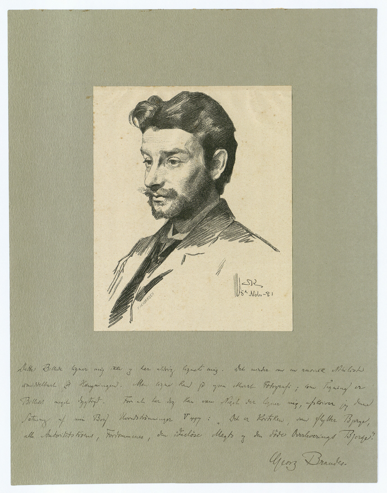
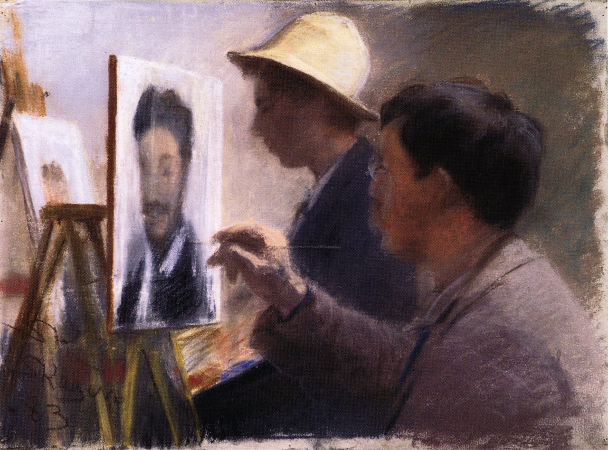

Contents
1. Introduction
“The surest way for a beginning Danish writer to make a name is still, as it was 24 years ago, to write something or other against me,” declared a self-conscious Georg Brandes in 1895 (“The Circumstances of a Danish Author,” Politiken, March 2, 1895). These words are still applicable today, as Brandes continues to evoke powerful attitudes and feelings in Danish public discourse. He is still a continuous presence in that forum, as one of the few surviving voices of the 19th century. He has managed to sow division ever since he first stepped up to the lectern in auditorium 7 in the main building of Copenhagen University, on November 3, 1871 at 6:00 PM, thereby inaugurating his series of lectures on recent European literature, Main Currents Nineteenth Century Literature, which was published in book form between 1872 and 1890. In and of itself this is a noteworthy achievement. Yet the local uproar over the lectures has also tended to overshadow the literary work itself, which provoked both the conflicts at home as well as the immense and complicated international afterlife of the work. The research and publication project Digital Currents provides new contributions and tools for research in both respects.
") Georg Brandes in his study, circa 1890. Photograph: Axel Hansen
Georg Brandes in his study, circa 1890. Photograph: Axel Hansen
2. Main Currents
Brandes’ Main Currents in Nineteenth Century Literature was at the same time an academic exercise and a work of engaged cultural critique. The work addresses the (literary) history of Europe’s main countries, but also the provincial nature of contemporary Danish intellectual life. The drama was thus viewed by the by the Danish public as a kind of test piece: “I believe, that we can draw a lesson for ourselves from this great drama. We are now, as usual, forty years behind Europe,” wrote Brandes, making use of the national “we,” which clearly emerges as the addressee. Denmark was for Brandes indeed unique in the European context, but in a negative sense: “Nowhere in Europe are there so many exalted ideals and, in few places, a flatter spiritual life,” he asserted polemically (“Introduction” in Main Currents ... vol. 1: Emigrant Literature, 1872, p. 25).
With this he has further defined a role for himself in the national drama: as the one who would spur especially the authors to action and to persuade them to write in a manner close to reality and engaged with the times. He would urge them to “provoke debate,” an expression that immediately became a cliché – and still is to this day. With this intervention Brandes inaugurated a new era in Denmark, “the Modern Breakthrough,” as he would later deem it. One of the authors of the Modern Breakthrough, Nobel laureate Henrik Pontoppidan, speaks in his novel Lucky Per (1898-1904, 1905) of the “European cultural wave” that Brandes (in the novel portrayed as Dr. Nathan) had been able to unleash over the country.” The wave had engendered “a series of revolutionary poets, scientists and politicians” at the same time that “in the purely practical domain” it had “brought forth a surge of youthful and bold energy that sought outlets” (Lucky Per, 4th edition, 1918, vol. 1, p. 333). This burst of energy is seen by the novels main character, the engineering student Per Sidenius, as only one of the innumerable consequences of Brandes’ movement. The Modern Breakthrough was further much more than a purely literary phenomenon, a kind of umbrella category encompassing a long series of modernization processes as well as a sustained and closer engagement and exchange with the outside world, especially within the domains of culture and science.
 Georg Brandes. Portrait drawing by P.S. Krøyer, 1881. The Royal Library. Brandes' comment reads: This picture does not resemble and has never resembled me. It recalls a Russian Nihilist immediately before his hanging. But every photograph can produce a likeness; as a drawing the picture is quite good. Yet that there should be something here that does resemble me, I write down this sentence from my book Main Currents (V 497): It is the critic who moves mountains, all the mountains of blind faith in authority, prejudice, the intellectual emptiness of power and the transmission of the dead past.”
3. The good European
Although Main Currents was initially conceived as an intervention in and attack on the local Danish cultural situation, it was however a larger, European story Brandes related: the story of the great national literatures – the French, German and English – their distinguishing traits, their mutual codependence and their receptiveness to impulses from abroad. And this so engaged and interested him that he reached out to a broader and more international public than any Danish humanist before or since. Brandes was translated into 17 languages, Main Currents alone appearing during his lifetime in Danish, German, English, Russian, Polish, Yiddish and Japanese, while individual volumes of the series were also published in Finnish and French. After his death it has also come out in Spanish and Chinese. Very few Danish authors have had a corresponding impact: H.C. Andersen, Søren Kierkegaard, Isak Dinesen.
Compared to this distinguished company, Brandes’ fame is distinct in that it was to a large extent tied to his particular era, and when his fame was it at its peak, it was more intense than any experienced before or after. He has – in the words of literary scholar Paul V. Rubow – “without comparison been the Dane who has been heard abroad” (“Georg Brandes,” Danish Biographical Lexicon, 3rd edition, 1979, vol. 2, p. 459). As public speaker he toured constantly, and in 1912 alone he spoke in 42 European cities.
Through his journalism and his criticism published in newspapers, Brandes further understood how to make himself relevant to the new and fast moving media environment. But just as importantly, he succeeded – as speaker, journalist and author – in making an impression on the generation on the cusp of the century of globalization – and world war. When Brandes died, the German author and Nobel laureate Thomas Mann said that around 1900, Main Currents had been “the bible of the young intellectuals of Europe” (Thomas Mann, “A Master of Productive Criticism,” Politiken, February 20, 1927. And Brandes was a genuine European, indeed “the Good European,” as he was deemed by the German philosopher Friedrich Nietzsche, whom Brandes had “discovered” and popularized around 1890 (Letter from Nietzsche to Brandes, Nice, December 2, 1887, in Paul Krüger (publisher): Correspondence of Georg Brandes, 1966, vol. 3, p. 441)
 P.S. Krøyer: Oscar Björck and Eilif Peterssen paint Georg Brandes, 1883. Pastel. Randers Art Museum.
4. The global Brandes
Toward the end of his life, Brandes the European experienced the dawn of globalization – his own authorship included. With a measure of self-satisfaction, Brandes made this clear in a reckoning of his status: “I have my readers in Europe, Asia and America. I am of a different nature than those who address themselves to the Danish bourgeoisie (Georg Brandes: "Georg Brandes and Social Democracy. A contribution from Georg Brandes on the occasion of Social Minister Borgbjerg’s speech,” in Social-Demokraten, November 22, 1924). In situation such as this, Brandes sensed a new and difficult task for himself, which was expressed in the foreword to the Japanese edition of Main Currents (1915):
Main Currents begins with the old fable of ‘The Raven and the Stork.’ The work would open up the perspective of the various European nations to the advantages of one another, serve the raven’s dishes on the stork’s table and vice versa. Now the fable applies more broadly. It would please the author of Main Currents if he had served European intellectual nourishment in such a manner that it might now be appropriated by the Japanese palette (“Foreword to the Japanese Edition of Main Currents”, Politiken, July 23, 1915)
Good luck with that! Whereas the work had first attempted to compare and tie together European cultures, now Brandes understood that it was matter of fostering an intercontinental dialog. This broadening of horizons was a reflection of a developing situation in which cultures, crises and wars were becoming globalized. The First World War (1914-1918) was a pressing example of this, and Brandes’ critical engagement with the conflict turned him into a global player whose commentaries on its unfolding developments were constantly in demand in all the world’s newspapers. It is especially the international perspective and afterlife of the authorship that Digital Currents would draw attention to.
Georg Brandes with Asta Nielsen on board the Hamburg-America line’s Vaterland, May 1914.
5. The digital Brandes
The first scientific edition of Brandes’ main work that the project has established is also its first digital edition. It is addressed to the specialist and the layperson, both in Denmark and abroad. In order to assist the reader in grasping the significance of the work, a series of advanced viewing applications and resources have been produced for the edition: translations, commentaries, indexes, links to dictionaries, and detailed introductions to all the texts, written by an interdisciplinary research group, that place Main Currents in new disciplinary and cultural historical contexts. The projects documentation and study of Brandes’ principal text on the critical as well as emancipatory potential of internationalization and the meeting of cultures is especially interesting to us in two contexts in which Main Currents was pioneering work; in the first place its role in the development of comparative literature as an internationally oriented field, in the second its role in the formulation of a modern European identity. Both the one and the other are relevant to the globalized present in which disciplinary traditions as well as geopolitical constellations are under stress. And current events have on the whole substantiated Brandes theorizing and practice of his dual roles: as scientist and “intellectual” – to employ the term Brandes himself introduced into Danish – and as Dane and world citizen.